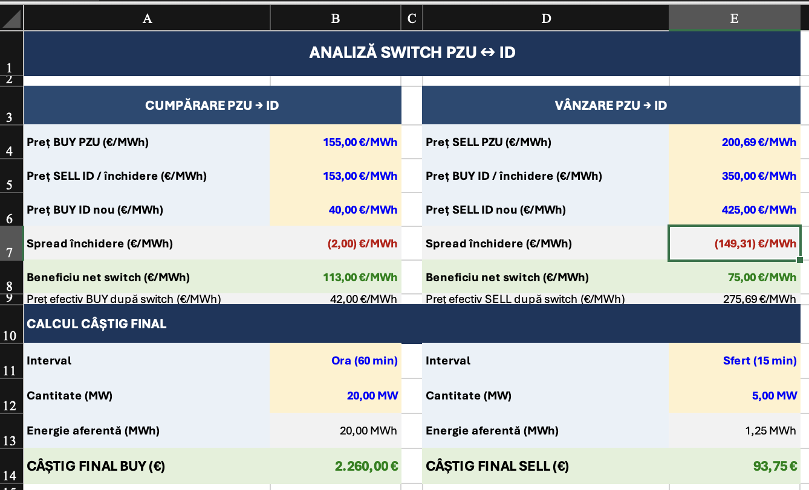
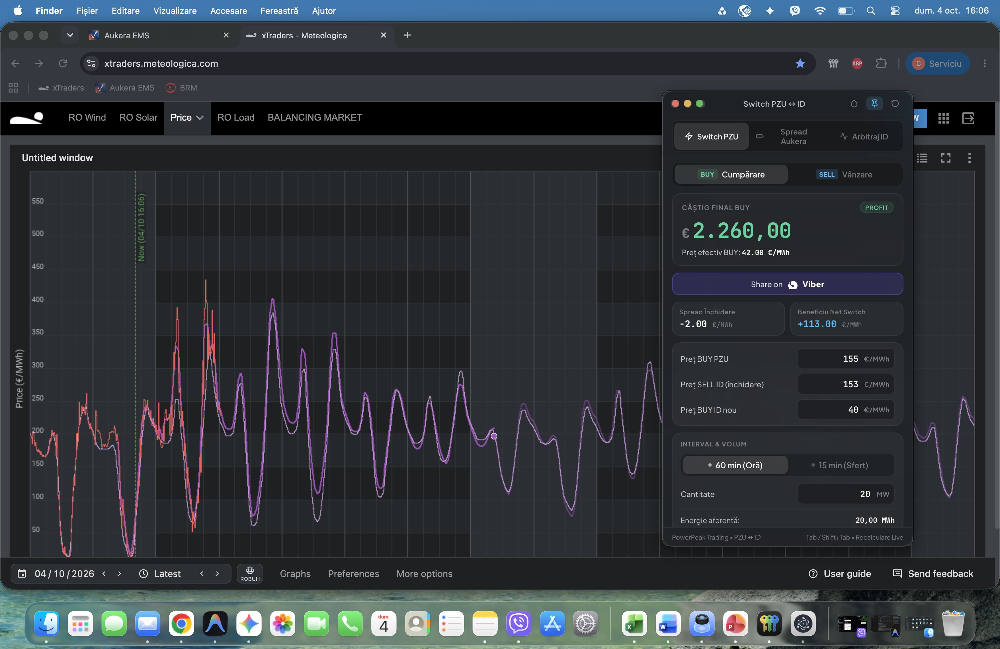
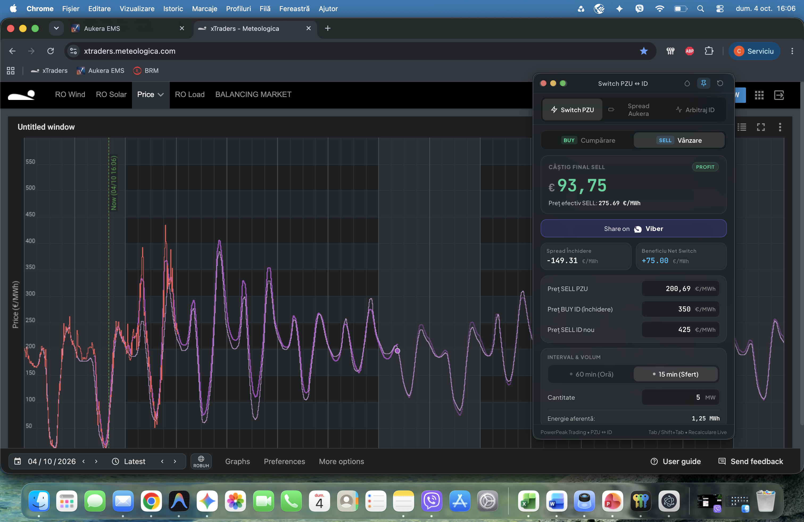
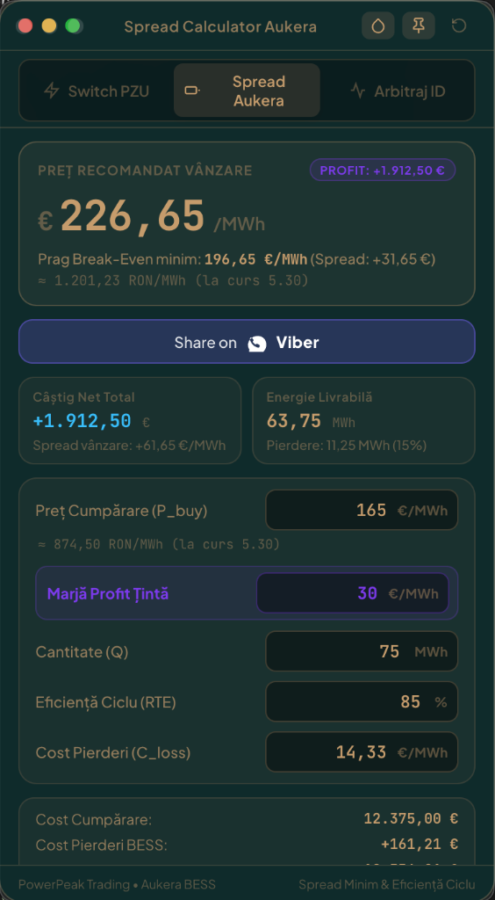
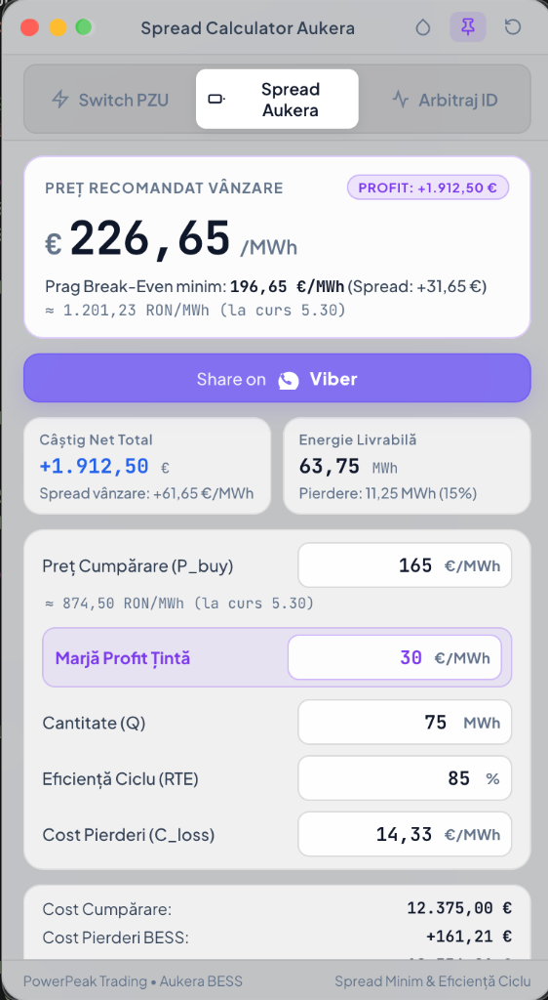

Găsiți fișierul Switch-PZU-Mac-AppleSilicon.zip în
Google Drive > PPT > Cristian > switch-pzu-calc.
Dați click-dreapta pe el și alegeți Download (Descărcare) pentru a-l salva pe Mac-ul vostru (ex: în Downloads sau Desktop).
După descărcare, dați dublu-click pe fișierul .zip descărcat. Va apărea aplicația cu iconița ei.
Deschideți Finder, mergeți la folderul Applications (Aplicații) (în stânga) și trageți aplicația peste el.
Fiind o aplicație internă (nu din App Store), sistemul de securitate Apple va cere o confirmare prima dată:
• În folderul Applications, dați Click-Dreapta (sau Control + Click) pe aplicație și alegeți Open (Deschide).
• Apăsați din nou butonul Open în fereastra de avertizare.
*Acest pas se face o singură dată. Ulterior, aplicația se deschide normal.
Cu aplicația deschisă, dați Click-Dreapta pe iconița ei din bara de jos (Dock).
Alegeți Options (Opțiuni) > Keep in Dock (Păstrează în Dock).
Am transformat calculatorul vechi din Excel într-o aplicație dedicată care stă deasupra graficelor de trading fără să încurce.



Pe lângă Switch PZU, aplicația conține acum un al doilea motor de calcul integrat pentru Spread Calculator Aukera (BESS).


Modulul 3: Arbitraj ID – Butonul din dreapta-sus este deja pregătit pentru următorul update. Acest al treilea motor de calcul va fi dedicat exclusiv tranzacțiilor de arbitraj pe piața Intraday (ID). Va permite calculul ultra-rapid al profitabilității (cumpărare vs. vânzare pe ID), păstrând aceleași beneficii: fereastră plutitoare (always-on-top) și integrare directă cu Viber pentru confirmări instantanee.